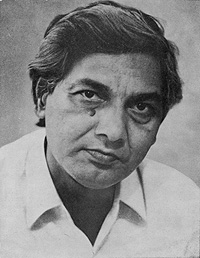

|
SHAHRYAR retired as Chairman and Professor of the Department of Urdu from the Aligarh Muslim University in 1996. His first collection of poems, Ism-e A‘am, was published in 1965. Since then he has published four others: Saatvaan Dar, Hijr ke Mausam, Khvaab kaa Dar Band Hai and Neend ki Kirchen. He has also published five collections in Devanagari script, thus bridging the Urdu-Hindi divide and reaching out to those who appreciate Urdu poetry but cannot read the Urdu script. |
|  |